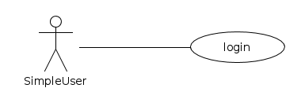
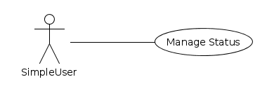
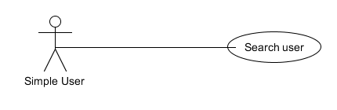
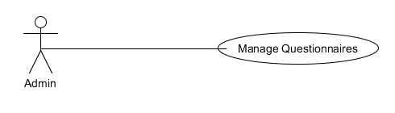
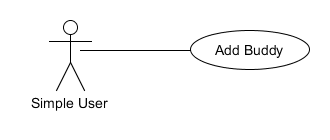
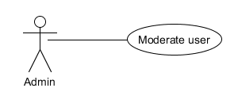

Πρωτεύον Actor:
Simple User
Ενδιαφερόμενοι:
Simple User: Είναι ο άμεσα ενδιαφερόμενος καθώς είναι υπεύθυνος για τον λογαριασμό του (δημιουργία, επεξεργασία πληροφοριών, διαγραφή)
Admin: Θέλει να ενημερώνεται για τη δημιουργία νέων λογαριασμών στην υπηρεσία.
Προϋποθέσεις:
Για τη δημιουργία λογαρισμού δεν προαπαιτείται κάτι.
Για την επεξεργασία και τη διαγραφή λογαριασμού προαπαιτείται η σύνδεση στο λογαριασμό του (use case ‘Login’).
Βασική ροή
A)Εγγραφή Χρήστη
Εναλλακτικές ροές
3-4a)Ο χρήστης υπάρχει ήδη.
1. Το σύστημα εμφανίζει μήνυμα λάθους.
4b)Ο χρήστης ακυρώνει τη διαδικασία δημιουργίας λογαριασμού.
Β)Ενημέρωση λογαριασμού
Γ)Διαγραφή λογαριασμού

Πρωτεύον Actor:
Simple User
Ενδιαφερόμενοι:
Simple User: Ο άμεσα ενδιαφερόμενος αφού μετά την επιτυχή ταυτοποίησή του εισέρχεται στον λογαριασμό του.
Admin: Θέλει να ενημερώνεται για το πότε έγινε η τελευταία σύνδεση κάθε χρήστη.
Προϋποθέσεις:
Προαπαιτείται δημιουργία λογαριασμού(use case ‘manage account’) .
Βασική ροή
A)Σύνδεση Χρήστη
Εναλλακτικές ροές
2a)Ο χρήστης δεν είναι κατοχυρωμένος στο σύστημα.
2b)Ο χρήστης εισάγει λάθος κωδικό πρόσβασης.

Πρωτεύον Actor:
Simple User
Ενδιαφερόμενοι:
Simple User: Είναι ο άμεσα ενδιαφερόμενος καθώς είναι αυτός που ενημερώνει την κατάστασή του, σχολιάζει τις καταστάσεις των άλλων χρηστών καθώς και τη δική του, μπορεί αν διαγράψει την κατάστασή του και μπορεί να κάνει report μια κατάσταση κάποιου χρήστη.
Admin: Είναι επίσης ενδιαφερόμενος αφού θέλει διαρκώς να ενημερώνεται για την κίνηση της υπηρεσίας.
Προϋποθέσεις:
Ο χρήστης να έχει συνδεθεί στην υπηρεσία (Use case ‘login’).
Για τον σχολιασμό, τη διαγραφή και την αναφορά κάποιες κατάστασης προαπαιτείται υπάρχουν διαθέσιμες καταστάσεις.
Βασική ροή
A)Ενημέρωση κατάστασης
Εναλλακτικές ροές
2a)Ο χρήστης ακυρώνει τη διαδικασία.
Β)Σχολιασμός κατάστασης
Γ)Διαγραφή κατάστασης
Δ)Αναφορά κατάστασης

Πρωτεύον Actor:
Simple User
Ενδιαφερόμενοι:
Simple User: Είναι ο άμεσα ενδιαφερόμενος καθώς ειτε θα αναζητει καποιον φιλο(buddy) απο τους ηδη υπαρχοντες ωστε να ερθει σε επικοινωνια μαζι του ειτε θα αναζητει νεο buddy με βαση συγκεκριμενα κριτηρια
(Admin: Θέλει να ενημερώνεται για το εαν καποιος κανει καταχρηση της υπηρεσιας.)
Προϋποθέσεις:
Για την αναζητηση χρηστων απαιτείται ο χρηστης να εχει δημιουργησει επιτυχως λογαριασμο(use case ‘Manage account’).
Για την αναζητηση μεταξυ των buddies που διαθετει ηδη ο χρηστης θα πρεπει να εχει τουλαχιστον εναν buddy.
Βασική ροή
A)Αναζητηση Χρήστη
Εναλλακτικές ροές
2a)Ο χρήστης εχει κανει καποιο λαθος στην επιλογη κριτηριων.
3α)Ο χρήστης ακυρώνει τη διαδικασία αναζήτησης φιλου.

Πρωτεύον Actor:
Admin
Ενδιαφερόμενοι:
Admin: Είναι αυτος ο οποιος καθοριζει το συνολο των ερωτησεων που υπαρχουν στο συστημα καθως και αυτες που θα κληθει να απαντησει ο χρηστης που δημιουργει νεο λογαριασμο.
Simple User:Θα επιλεξει ερωτησεις βαση των οποιων θα γινεται αναζητηση νεων χρηστων για να τους προσθεσει ως buddies.Επισης απανταει στις αρχικες ερωτησεις κατα την εγγραφη του για την διαμορφωση του προφιλ του.
Προϋποθέσεις:
Για την επεξεργασια των ερωτησεων ο Admin θα πρεπει να εχει κανει login στην υπηρεσια(use case 'Login).
Βασική ροή
A)Επεξεργασια ερωτηματολογιου
Εναλλακτικές ροές
4a)Ο χρήστης δινει ακυρη απαντηση σε καποια ερωτηση.
Β)Επεξεργασια ερωτηματολογιου απο τον χρηστη

Πρωτεύον Actor: Simple User
Ενδιαφερόμενοι: Simple User: Είναι εκείνος που θα εκτελέσει την ενέργεια για την προσθήκη φιλίας με έναν άλλον Simple User.
Προϋποθέσεις:
Προαπαιτείται η επιτυχημένη σύνδεση στο λογαριασμό του (use case ‘Login’).
Βασική ροή
A)Προσθήκη φίλου
Εναλλακτικές ροές
1a)Ο χρήστης δεν υπάρχει
3b)Ο χρήστης δεν απαντάει σε κάποιες ερωτήσεις με την απαιτούμενη μορφή

Πρωτεύον Actor:
Admin
Ενδιαφερόμενοι:
Admin: Είναι εκείνος που θα εκτελέσει την ενέργεια να επεξεργαστεί τα στοιχεία/πληροφορίες ενός χρήστη
Simple User: Θα δεχτεί τις αλλαγές στα στοιχεία/πληροφορίες του.
Προϋποθέσεις:
Ο Admin πρέπει να χει συνδεθεί στο λογαριασμό του (use case ‘Login’).
Ο χρήστης πρέπει να έχει κάνει εγγραφή(use case ‘Register’).
Βασική ροή
A)Έλεγχος Αναφορών
Εναλλακτικές ροές
Β)Επεξεργασία λογαριασμού Χρήστη
Γ)Επεξεργασία Status